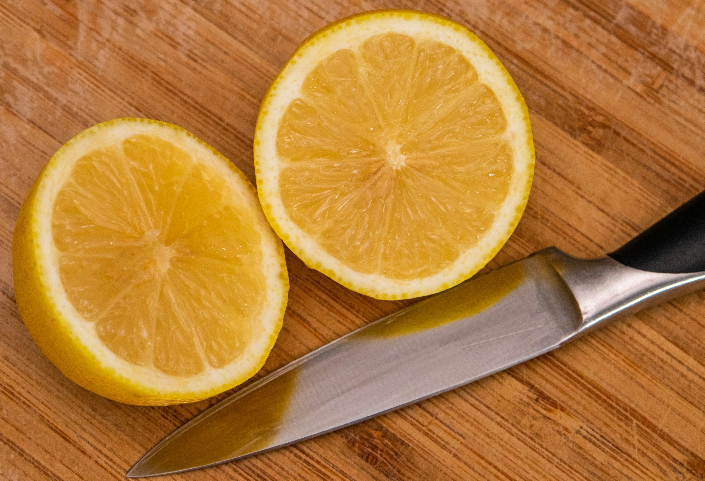

Создайте HTML-документ с сеткой из карточек, перевернутых лицом вниз. Напишите JavaScript-код, который будет реализовывать механику игры "Найди пару", при которой игрок должен открывать карточки и находить пары с одинаковыми изображениями.